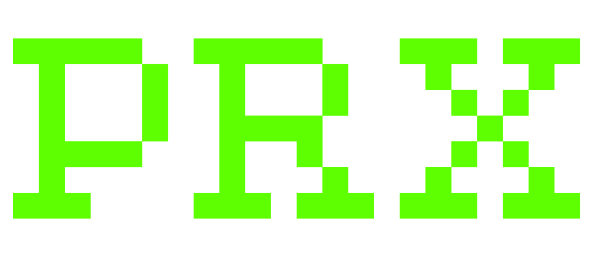

A full-stack transportation platform built for residents of Morris, Minnesota to book rides between Morris and major cities including Minneapolis, St. Cloud, Alexandria, and Willmar. Features user authentication, driver registration, ride scheduling, and trip management, making regional transportation more accessible for students and local residents.
view →An interactive data visualization dashboard built with R Shiny to explore NASA's Near-Earth Object dataset. Users can analyze asteroid size, velocity, miss distance, and hazardous classifications through interactive charts, filters, and statistical models.
view →Developed image-processing tools for astronomical observations using Python and Astropy. Automated calibration, image alignment, stacking, and RGB composition of telescope FITS images as part of undergraduate astronomy research.
view →A machine learning project that predicts UFC fight outcomes using historical fighter statistics, striking accuracy, takedown metrics, and performance trends. Includes automated web scraping, data preprocessing, and predictive modeling.
view →A custom-designed developer portfolio inspired by retro terminal interfaces. Features animated transitions, fullscreen video backgrounds, responsive layouts, and a minimalist cyberpunk aesthetic built entirely from scratch.
view →